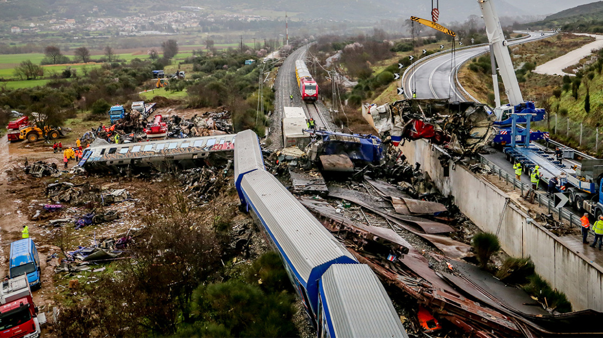

Tragic Train Collisions in Greece
A series of devastating train crashes has shocked the nation, raising urgent questions about railway safety and infrastructure. Here’s what we know so far.
In recent months, Greece has been shaken by a series of devastating train collisions that have left the country in mourning and sparked widespread outrage. The most recent crash, which occurred on Feb. 28, 2023, involved a passenger train colliding with a freight train near Tempi Valley. The impact was catastrophic, with multiple carriages derailing and dozens of lives lost. Rescue teams worked tirelessly through the night to pull survivors from the wreckage, but the damage was overwhelming, and the emotional toll on the nation has been immense.
Initial investigations into the crashes point to a combination of outdated infrastructure and human error. Reports suggest that the signaling system, designed to prevent such collisions, failed to alert the train operators in time. Miscommunication between train staff and control centers may have also played a role. Greece’s railway network has long been criticized for its lack of modernization, with tracks and equipment in dire need of upgrades. Critics argue that safety protocols were either ignored or not properly enforced, raising serious questions about the state of the country’s rail system.
